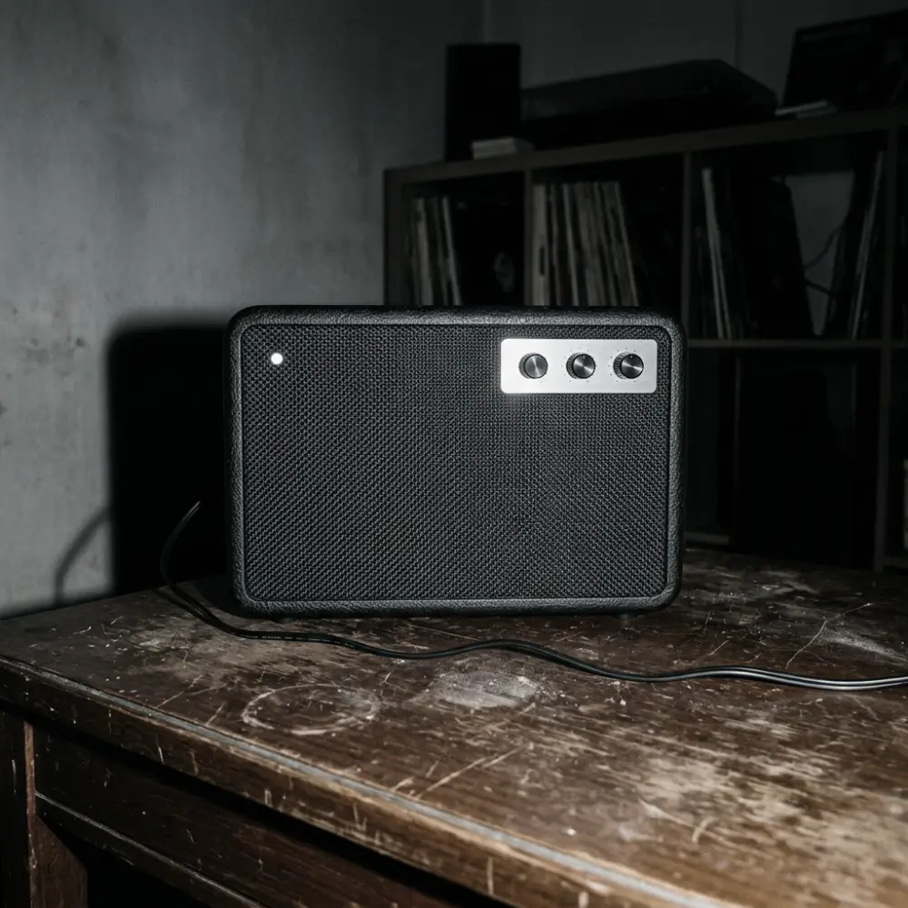

비공식 포트폴리오 시안 · Marshall 공식 사이트가 아닙니다.
함께 듣고 · 홈 스피커
Acton IV
집 안의 음악을 함께 듣는 전원 연결형 스피커. 무선 재생과 아날로그 입력을 사용해 방의 청취 방식을 넓힙니다.

방 안에 음악을 채우기
고정된 청취 공간에서 여러 사람이 함께 듣거나 아날로그 소스를 연결할 때 적합합니다.
이럴 때 좋다
- 집 · 리스닝룸
테이블이나 선반에 두고 공간 전체에서 듣습니다.
- 무선 · 아날로그
Bluetooth 5.3과 AUX·RCA 입력을 제공합니다.
다시 생각할 때
- 야외 · 휴대 사용
배터리형 휴대 스피커가 아니라 콘센트 전원이 필요합니다.
공식 사양 · 2026-09-29 확인
제품 사양
Acton IV
- 무선 연결
- Bluetooth 5.3 · Auracast 지원
- 유선 입력
- 3.5mm AUX · RCA
- 전원
- 100–240V 콘센트 입력
- 크기와 무게
- 260 × 171 × 150mm · 2.65kg
사양 출처: Marshall · Acton IV 공식 제품 페이지 · 확인일 2026-09-29. 제품 사진은 로고 없는 가상 이미지로, 실제 제품과 다릅니다.